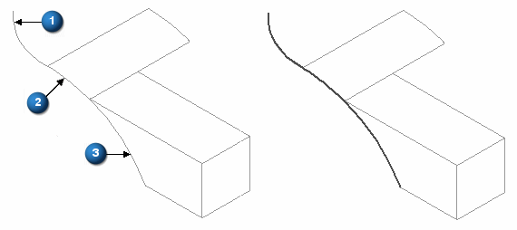

Derived Curve command
Use the Derived Curve command  to construct a new curve that is derived from one or more input curves or edges.
If all the input curves or edges are connected at their endpoints, you can specify
that the derived curve is constructed as a single b-spline curve. If the input curves
are connected, but not tangent, the output curve will have a minimal amount of curvature
added so that a single, smooth b-spline curve is constructed.
to construct a new curve that is derived from one or more input curves or edges.
If all the input curves or edges are connected at their endpoints, you can specify
that the derived curve is constructed as a single b-spline curve. If the input curves
are connected, but not tangent, the output curve will have a minimal amount of curvature
added so that a single, smooth b-spline curve is constructed.
You can construct a single derived curve from multiple bodies. For example, you can construct a derived curve from a sketch (1), edges on a construction surface (2), and edges on a solid (3).
